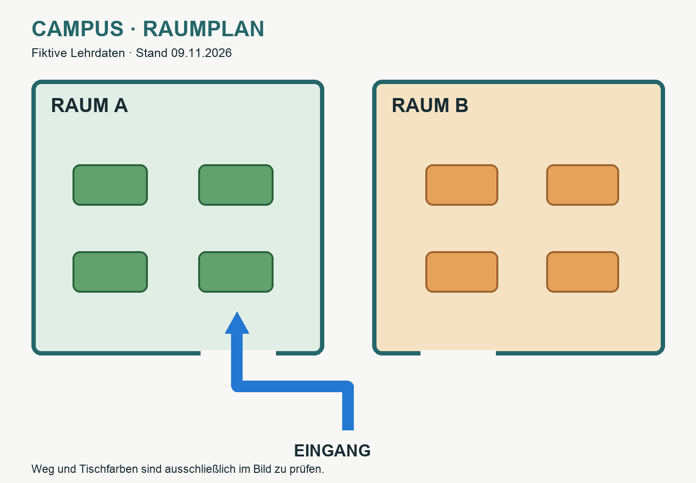

Tisch = aktueller Kontext
Das Modell nutzt die Inhalte, die ihm für die aktuelle Antwort mitgegeben werden.
Speichern ist nicht dasselbe wie Nachschlagen.
30 Minuten · Dokumente, RAG & Memory
Wie bekommt meine KI das richtige Wissen – und hat sie es wirklich genutzt?
Datei hochgeladen.
Ist damit alles verstanden?
Prof. Dr. Mathias Engel · ProfEngel
Das einfache Gesamtbild
Vier Funktionen – keine Leiter zu einer „immer besseren KI“.
Das Modell nutzt die Inhalte, die ihm für die aktuelle Antwort mitgegeben werden.
Speichern ist nicht dasselbe wie Nachschlagen.
Text · Bild · Audio · Video
Inhalt erfassen → passend darstellen → suchen. Erst danach antworten.

Textextraktion: Eingang · Raum A · Raum B. Der blaue Weg und die Tischfarben sind darin nicht enthalten.
Wörter allein zeigen den Weg auf dem Raumplan nicht.
Was geht bei der Reduktion auf Text verloren?
Unterstützt Text, Bild, Audio und Video für passende Suchaufgaben. Ein Embedding findet Ähnliches – es erzeugt noch keine begründete Antwort. Unterstützung und Verarbeitungsweg im eigenen System prüfen.
RAG = passende Quellen für die Antwort mitgeben
Ähnlich ist nicht automatisch wahr. Quelle, Stand und Rechte zählen.
Didaktische Simulation · feste Beispieldaten, kein LLM und kein echtes Embedding.
Memory wird erst nützlich, wenn wir es später auch nachschlagen.
Frage auswählen und Suchlauf starten.
Eigenständig ausprobieren · 7 Minuten + 2 Minuten Wrap-up
Eine Textquelle. Ein Raumplan. Eine absichtlich offene Frage.
① Preis & Personenzahl?
② Blauer Weg & Tischfarbe?
③ Kostenloses Parken?
480 € für 24 Personen · Angebot, S. 1, Basispaket.
Raum A, grüne Tische · Raumplan, blauer Weg links oben.
Parken: nicht belegt.
Eine Merkkarte ist erst dann Memory, wenn sie bewusst gespeichert und später abgerufen wird.
Lösung & Prüfbogen ↗Das Big Picture · W01–W06
Nachschlagen statt auswendig aufsagen
Passende Quellen suchen und für die Antwort mitgeben.
Zum Schluss: Kontext ist nicht Memory. Ein Treffer ist noch kein Beleg.
Originalquellen · geprüft am 09.11.2026 · Grenzen und Einzelnachweise im lokalen Anhang.
Nutzer-PDF: interne Aufbauhilfe, nicht im Nutzungspaket. Neue Rasterbilder: Kie.ai; zwei Infografiken aus „KI als Superkraft“ mit erhaltener Provenienz.
Vollständiger Quellen- und Evidenzanhang ↗